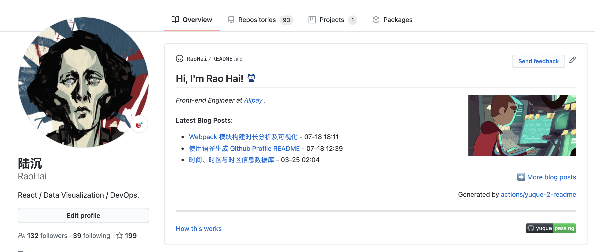
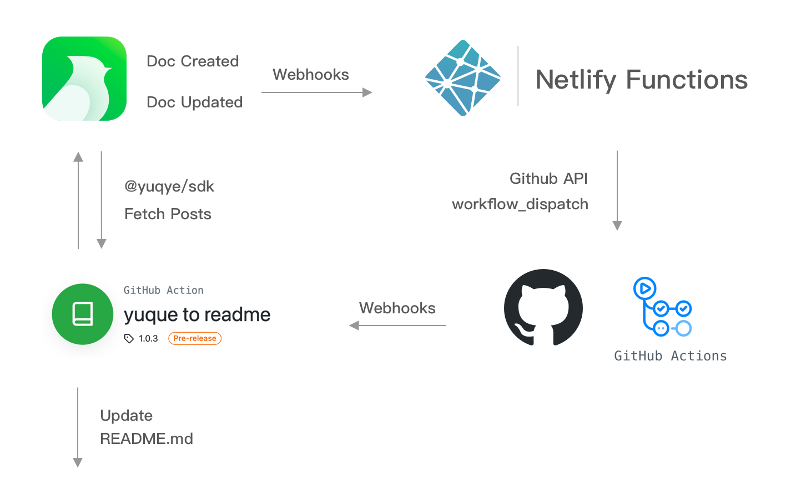

Generate README by Github Action
Github profile READMEs allowing users to create own content of REAMDE markdown file rendered at profile page.
Visit github.com/RaoHai and you'll see a list of posts. I do this with a Github Action in yuque.yml, the workflow configured to run on every push event and workflow_dispatch event.
The action runs actions/yuque-to-readme, which take your yuque API token and retrieve your posts from yuque. Then read given template file, then generate README.md by handlebars:
<h2>Hi, I'm Rao Hai! <img src="https://github.githubassets.com/images/mona-whisper.gif" height="24" /></h2>
<img align='right' src="https://media.giphy.com/media/836HiJc7pgzy8iNXCn/giphy.gif" width="230" />
<p><em>Front-end Engineer at <a href="https://www.alipay.com/">Alipay</a> . </em>
<h4> Latest Blog Posts: </h4>
{{#each record}}
- [{{title}}](https://yuque.com/{{@root.namespace}}/{{slug}}) - {{short created_at "MM-dd HH:mm"}}
{{/each}}
<p align="right"><a href="https://www.yuque.com/luchen/buzhou">➡️ More blog posts</a></p>
<p align="right">
Generated by
<a href="https://github.com/marketplace/actions/yuque-to-readme">actions/yuque-2-readme</a>
</p>
-----
<a href="https://github.com/RaoHai/RaoHai/workflows">
<img align="right" alt="Build README" src="https://github.com/RaoHai/RaoHai/workflows/yuque/badge.svg?branch=master" />
</a>
<a href="https://www.yuque.com/luchen/buzhou/qqi7hq">
How this works
</a>Whole scripts of yuque-to-readme is here.
It Also have a datoCms version datocms-to-markdown, It'll generate README.md from given datoCMS project.
Scheduling Workflow via Webhooks
Although that Github Actions schedule event allows you to trigger a workflow at a scheduled time just like
on:
schedule:
- cron: '*/15 * * * *'But I am skillfully doing this: yuque.com allows call a Webhook while a document area created or updated, so I hosted a Netlify Functions that exposed a Webhook API.
It dispatches a workflow_dispatch event by Github Api when it has been called. The yuque.yml workflow then scheduled.

Conclusion
This post provides a solution for scheduling workflow using Webhooks in building Github profile READMEs. Considering this workflow runs very fast, so maybe trigger it at a scheduled time is a more simple way, depends on you. :D.